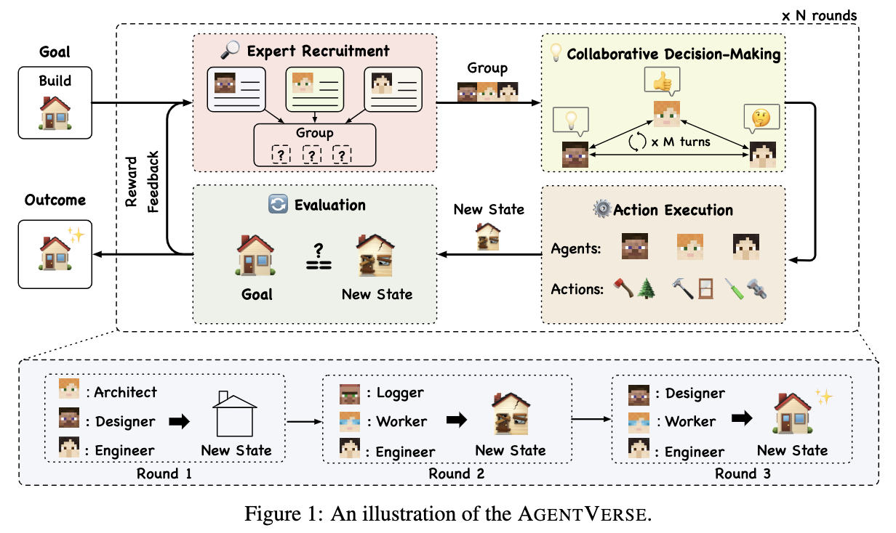
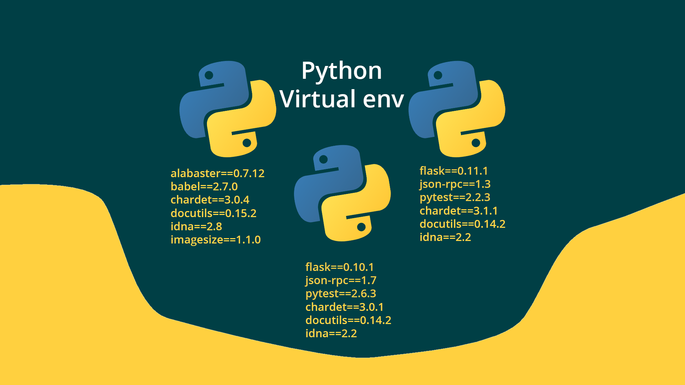
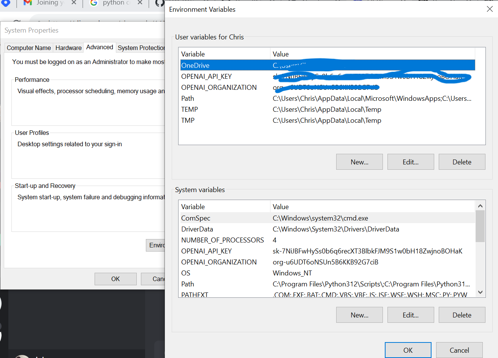
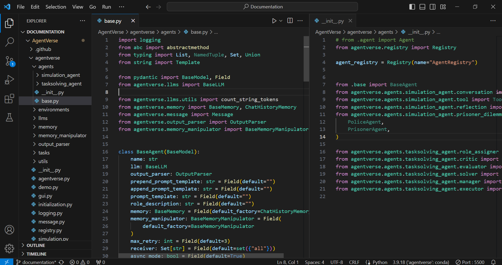

Introduction: AgentVerse
🤖 AgentVerse 🪐
Think of it as a universe for LLM agents.
It is designed to facilitate the deployment of multiple LLM-based agents in various applications, which
primarily provides two frameworks: task-solving and simulation
Introduce how to run an example successfully in CLI mode and in GUI mode
The codebase contained facilitates the creation and simulation of multi-agent systems, potentially incorporating language models for agent interactions.
Requirements
This documentation assumes you have the following:
- AgentVerse github repo
- A Python virtual environment setup
-
A working OpenAI API key
- Good working knowledge of Python
-
Some experience of web development
-
Knowledge and understanding of yaml
-
Interest or a general understanding of LLM's
-
Knoweldge of github

Installation
This section of the README has
details on how you can get up and running with installing this project. The steps below were used to install it
on Windows 10 using the recommended manually:
Make sure you have Python >= 3.9
- Clone the AgentVerse github repo
git clone https://github.com/OpenBMB/AgentVerse.git --depth 1
- Navigate into the folder
cd AgentVerse
- Install
pip install -e .
- Optional: If you want to use AgentVerse with local models such as LLaMA, you need to additionally install some other dependencies:
pip install -r requirements_local.txt
Another alternative to install is:
pip install -U agentverse
This guide shows how to export environment variables. On windows, the screenshot below gives as example on how it can be done.

Simulations: Graphical User Interface
Simulations can either have a Graphical User Interface (GUI) or a Command Line Interface (CLI), some simulations
have both interfaces. Here are some showcases, examples of cli simulations can be found here and GUI simulations can be found here.
The simulation agent located inside the agents folder which is inside the agentverse folder defines a
BaseAgent which is a Python class that serves as the foundation for other agent classes in the AgentVerse
framework.
The class includes attributes such as name, llm, output_parser, and methods like step, reset, etc.
The agent can interact with an environment and has methods for performing steps, asynchronous steps, and
memory management.
It provides functionality for managing prompts, receivers, spending, and memory-related operations.
As part of the agent registry module in the AgentVerse framework there is an initialization file that imports
classes from various modules, including simulation agents (ConversationAgent, ToolAgent, etc.) and
task-solving agents (RoleAssignerAgent, CriticAgent, etc.).
The Registry class from agentverse.registry is used to manage and register agents.The file initializes an
instance of Registry named AgentRegistry for agent registration.
These files shown below collectively contribute to the structure and functionality of the AgentVerse
framework, providing a foundation for creating and managing different types of agents in both simulation and
task-solving scenarios.

Task solving agent - Command Line Interface
The base.py file located inside the task-solving agent folder, defines an abstract base class named BaseAgent within the AgentVerse framework.
This class represents the foundation for creating agents in a multi-agent system. Agents are entities capable of interacting with an environment, processing messages, and maintaining memory.
Attributes:
name (str): A unique identifier for the agent.
llm (BaseLLM): An instance of a language model that the agent uses for generating responses.
output_parser (OutputParser): An output parser that interprets the responses generated by the agent.
prepend_prompt_template (str): Template for the prompt to be prepended before generating a response.
append_prompt_template (str): Template for the prompt to be appended before generating a response.
prompt_template (str): Combined template for the entire prompt used in generating a response.
role_description (str): A description of the role of the agent.
memory (BaseMemory): Memory for storing chat history and other relevant information.
memory_manipulator (BaseMemoryManipulator): Manipulator for interacting with the agent's memory.
max_retry (int): The maximum number of retry attempts if an error occurs during response generation.
receiver (Set[str]): A set of identifiers representing the entities that can receive messages from the agent.
async_mode (bool): A flag indicating whether the agent operates in asynchronous mode.
Abstract Methods:
step(self, env_description: str = "") -> Message: Abstract method to get one-step response.
astep(self, env_description: str = "") -> Message: Abstract asynchronous version of step.
reset(self) -> None: Abstract method to reset the agent.
add_message_to_memory(self, messages: List[Message]) -> None: Abstract method to add a message to the agent's memory.
Methods:
get_spend(self) -> float: Gets the spending of the agent (associated with language model usage).
get_spend_formatted(self) -> str: Gets the formatted spending of the agent.
get_all_prompts(self, **kwargs): Gets both prepend and append prompts along with the total number of tokens.
get_receiver(self) -> Set[str]: Gets the set of entities that can receive messages from the agent.
set_receiver(self, receiver: Union[Set[str], str]) -> None: Sets the receiver entities.
add_receiver(self, receiver: Union[Set[str], str]) -> None: Adds receiver entities.
remove_receiver(self, receiver: Union[Set[str], str]) -> None: Removes receiver entities.
This base class provides a blueprint for creating agents in a multi-agent system. It encapsulates common attributes and methods that agents might use to interact with the environment, generate responses, and manage their memory. The abstract methods enforce the implementation of core functionalities in derived agent classes. The class is designed to be extended to create specialized agents tailored for specific tasks or environments within the AgentVerse framework.
Contributing
To contribute or if you are interested in
joining the agent verse and a become core AgentVerse team member - don't hesitate to reach out to the leaders,
their details are on the repo's README file.